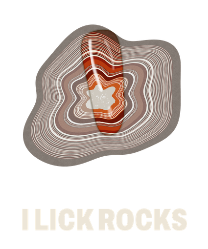
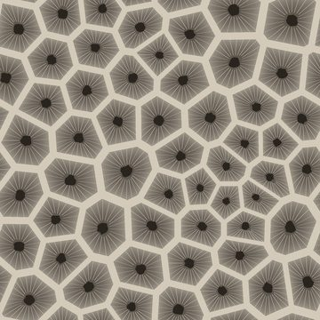
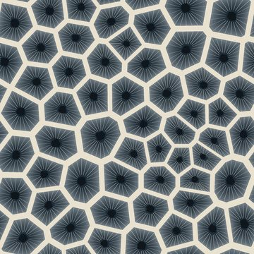

Your three options, plus two of mine. They all share one idea: every color comes in a dry shade and a wet shade, the way a beach stone looks before and after you dunk it. Tap any stone or swatch to wet it.
The museum specimen label. Collectors write the find, the place, and the date on a small card, and museums paint a catalog number right on the rock. Calm, credible, and made for the ID chart shirts.
Dry shades are for backgrounds and big fields. Wet shades are for text, buttons, and the moment something gets your attention.
Lake Superior agates hide in plain sight. Dry, they look like any other pebble. Wet, the bands show up, and the rest of the beach goes quiet.
No. HP-014 · Agate, fortification · Found Nov 2026
Best atTrust. The chart shirts and the field guide look like they came from someone who checks their facts.
Honest riskCalm can mean forgettable in a fast TikTok feed. It needs the real stones and shirts to bring the energy.
Changed from the first sketchI swapped Fraunces and IBM Plex for less common fonts, and the specimen label replaced the generic "journal" look.
A chore coat with a sewn-on name patch. Duck canvas, chain stitch, and big blunt letters. Wet canvas darkens just like a wet stone, so dark mode is literally the canvas after a wave hits it.
Adds Lake Michigan teal as a fifth color, mostly for socks.
Lake Superior agates hide in plain sight. Dry, they look like any other pebble. Wet, the bands show up, and the rest of the beach goes quiet.
Heavyweight cotton · Printed in the USA to order
Best atSelling shirts. It reads as a real apparel brand from across a room, and the patch works on hats, totes, and the future pocket liner.
Honest riskWorkwear brands are a crowded look. The rock story has to come from the designs, because the logo alone says "clothing company," not "rockhound."
Changed from the first sketchI dropped Space Mono, a very common font, and the badge became an oval name patch instead of a generic square one.
Almost everything is dull, dry gray. One thing is wet. In the logo it is a single letter, the O, glossy agate red as if someone just licked it. The brand idea fits in one character.
The rule: agate red only ever appears wet. If it shows up, it is the thing to look at.
Lake Superior agates hide in plain sight. Dry, they look like any other pebble. Wet, the bands show up, and the rest of the beach goes quiet.
Field note · Agate, Grand Marais, Michigan
Best atOriginality. Nobody else in rock merch looks like this, and the wet effect on the site becomes the whole show.
Honest riskQuiet logos vanish on a busy feed and on a dark shirt from across a parking lot. Lowercase serif can read "candle shop."
Changed after reviewThe lick streak read as a smudge, so the wet moment moved into one letter. DM Sans became Schibsted Grotesk.
The wildcard. Great Lakes navigation charts draw depth as rings of contour lines, and agate bands look almost exactly like them. Water names are italic and land names are upright, the way real charts do it. The shoreline is where dry meets wet.
Agate red becomes chart magenta, the color real charts use for lights and buoys. Sand becomes the buff of charted land.
Lake Superior agates hide in plain sight. Dry, they look like any other pebble. Wet, the bands show up, and the rest of the beach goes quiet.
Agate · 46°40′N · Grand Marais shoreline
Best atA world, not just a logo. Charts, field guide maps, beach locations, and the stone chart shirt all speak one language that only the Great Lakes have.
Honest riskThe outside review was blunt: hairline type and fine contours break up in shirt printing, topographic merch is common on Etsy, and magenta reads "pickleball." Better as a product series than as the brand.
Where it came fromNot in your three. The design skill's roll pushed me past my obvious picks, and this one held up. Ignore it freely.
A as the brand, the others as tools. Field Notebook becomes the maker's mark on every label. A heavy condensed sans sets the pun shirts so the jokes read at arm's length. Lake Chart becomes a named series for the chart shirt and the field guide. The lick becomes its own shirt and the site's tap-to-wet effect.
The agate O is now 4 angular, off-center bands, so it survives a 1-inch neck print and embroidery, and never looks like a target.
On cotton, use at most 3 inks per shirt. Final picks get matched to real Printify blank colors and samples, not screen colors.
Archivo, narrow and black. Big, blunt, and readable from across a parking lot.
Great Lakes Beach Stone Chart, the field guide, and maps of where to look. Thicker lines, no magenta.



Best atFitting the launch five: one chart, three puns, and socks. Each design gets the look it needs, and the label keeps them one brand.
Honest riskMore pieces to keep consistent. The rule that holds it together: every product carries the agate O label, and every color is a wet shade.
Where it came fromAn outside brand review of A to D. It argued against my first pick, D, and I agree.
Plain words instead of scores. "Stands out" means in a fast scroll on a phone. "Works small" means a 1-inch neck print or an embroidered hat. "The launch five" are 1 chart, 3 puns, and socks.
E, the hybrid. If you want one clean look instead, pick A.
Your three came first. D and E are my additions, so weigh them that way.
My first pick was D. An outside brand review talked me out of it: its fine lines break up in shirt printing, topographic merch is already common, and it works better as a series than as the brand. That review rated A the most sellable identity, B the most generic, and C the best idea with the weakest logo. E keeps the best part of each.
The logo sells less than you'd think. The designs and the videos do the selling. So the review's advice: pick this week, in one round, and spend the saved time on the five designs.
Color on screens is not color on cotton. Final colors get checked against real Printify samples at Step 10.